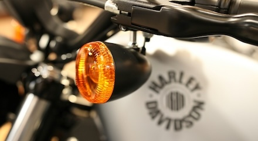

When does it happen?
Cold start, hot start, under load, after rain, after standing or completely at random?
Motorcycle diagnostics · Shrewsbury
Fault finding for motorcycles that will not start, will not charge, cut out, behave intermittently or have electrical problems that are difficult to pin down.
Fault finding
Good diagnosis starts with what the motorcycle is actually doing. Include when the fault happens, whether it is hot or cold, whether it is intermittent and anything that changed before the problem appeared.

A better enquiry
Cold start, hot start, under load, after rain, after standing or completely at random?
New battery, recent accessory, repair, service or previous diagnosis can all be relevant.
Clicking, cranking, no power, cutting out, warning lights or a smell can help narrow the first checks.
Need help with your bike?
Send the bike details and what you’re experiencing. We’ll review the enquiry and contact you to arrange the next step.